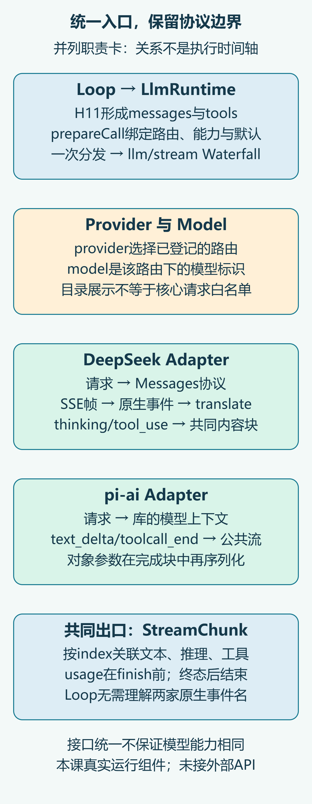
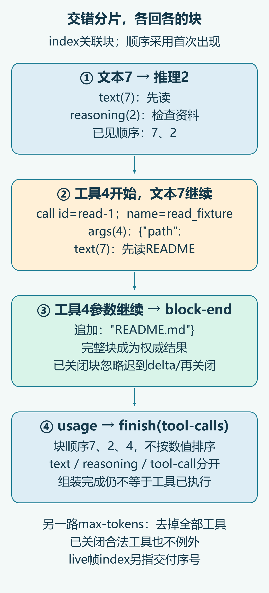
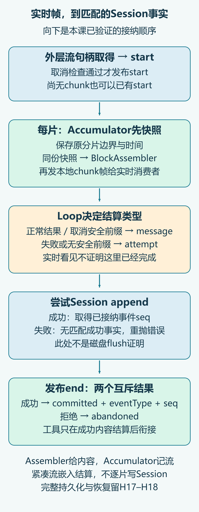
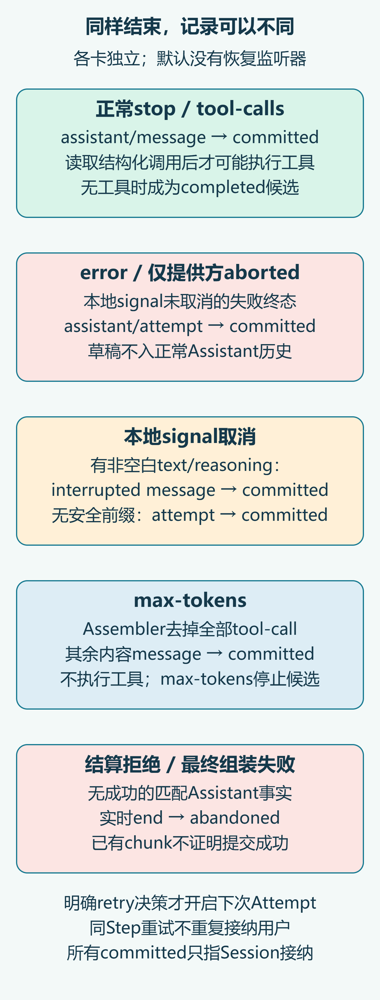

H12 作者审阅页 · 未发布。实际 LessonMarkdown 的静态渲染，折叠答案可展开；课程版本的复制交互已另经 React 挂载测试。图片在本页映射为相邻文件，不改变教材的 /course-media 路径。
LLM Adapter 与流式响应：模型输出如何进入 Harness？
185～245 分钟（分三段；作者估算，实际时长待试读，环境准备另计）
屏幕上已经有半句话，后台究竟完成了什么？
仍给代码助手同一个任务：“请读取 README，并简要介绍这个项目。”如果模型总是一次返回完整字符串，应用似乎只需等待，再显示全文。用教学伪代码写就是 const reply = await ask(task); show(reply)；这里的ask不是Harness API。
实际响应常常分批抵达：先有“我先”，再有“读取资料”；还可能有单独的推理内容、读取工具的名字和调用ID。参数先来{"path":，过一会儿才有"README.md"}。提供方最后报告用量与停止原因；网络也可能在右花括号之前断开，或模型达到输出上限。另一家提供方又使用不同事件名。
如果Agent Loop直接理解每家HTTP报文、增量字段和结束标记，更换提供方就会牵动工作循环。更麻烦的是：屏幕已经显示文字，却不一定已有一条可供下次请求使用的Assistant消息。工具参数看起来像JSON，也不一定到了可执行的边界。
本节要回答：零散数据属于哪条响应、哪个内容块和工具调用，怎样判断结束，以及哪些结果能作为Session事实接纳？ 最后交出三份证据：逐片组装表、实时帧与结算对应表、第二次请求实际读到的工具结果。术语都为这三份产物服务。
先用逐个拆信，理解异步迭代
Stage 4.1已经让工具结果回交模型；Stage 3的服务端调用与流式页面说明“收到部分内容”和“请求完成”是不同状态。HTTP是请求与响应协议；流式响应允许响应体逐批抵达，SSE是一种事件文本分帧方式。网络字节片段、SSE事件和本课的StreamChunk不是一一对应，Adapter负责跨过这层差异。
await等待一个Promise的结果；AsyncIterable则是“还能继续异步取下一个值”的对象。async function*创建异步生成器，每次yield交出一个值，for await...of反复等待它的下一项。它不会因为循环写在一处就一次拿到全文，也不会把yield当成文件写入。先在Node中运行这个不依赖Harness的完整小例子：
async function* pieces() {
yield '请'; await Promise.resolve(); yield '读'; yield 'README';
}
let text = '';
for await (const piece of pieces()) {
text += piece; console.log(text);
}输出依次为“请”“请读”“请读README”。这个例子使用已完成的Promise而非网络，所以只展示逐项交付；不模拟延迟、背压或Harness。实践入口intro和A01会验证同样的三份累计状态。提前break会触发迭代器关闭约定，但不能据此推断任意远端请求已撤销；真正的停止还要由实现配合AbortSignal。
JSON字符串和JavaScript对象也先分开：'{"path":"README.md"}'是一段字符串，JSON.parse后才是对象。半截字符串不能作为完整JSON解析。TypeScript联合类型则用标签区分形状，例如先判断chunk.type === 'text-delta'，才读取它的text；不要对所有分片都读同一个字段。
H09提供已经创建、持有Handle并能释放的Agent；本课沿用它，不为每个分片创建Agent。H10的Step包含模型判断及相关工具，失败重试可以留在同一个Step；一次模型尝试才对应一份响应流。H11已经将指令、动态事实、历史和工具声明组成GenerateOptions；本课从这个请求进入Runtime开始，看到结算和工具反馈为止，不重复Prompt算法。
Runtime管共同入口，Adapter翻译具体协议
先想两个提供方：A发content_block_delta，B的库发text_delta。Loop只想知道“哪个块多了哪段文字”，不必知道原生事件名。Adapter（适配器）是把具体协议翻译成共同结构的对象；LlmRuntime是管理这些对象并提供统一调用入口的服务。 接口转换不能凭空补齐模型能力，也不保证不同提供方效果相同。
| 名称 | 在这个任务中是什么 | 容易混淆之处 |
|---|---|---|
| LlmRuntime | ctx.llm，管理注册、模型信息、调用准备和流式入口 | 是同进程服务，不必是另一个HTTP服务 |
| LlmAdapter | 某个提供方协议的实现对象，可以拥有多个路由 | 一个Adapter不必只对应一个Provider |
| Provider | GenerateOptions.provider选择的注册路由，例如实验fixture | 不是模型名称，也不等于配置界面里尚未激活的条目 |
| Model | 该路由下的具体模型标识，例如实验scripted | 同名不证明能力或端点相同 |
实际基类是LlmAdapter，服务类是LlmRuntime。用ctx.llm.registerAdapter(['fixture'], adapter)登记后，listProviders()按注册顺序返回路由；listModels(provider)取得适配器公布的模型目录；resolveModelInfo(provider, model)询问一个精确路由的能力。契约见Adapter与Runtime、注册和模型信息。
模型目录用于展示和选择，不是核心Runtime的统一请求白名单。实验Adapter没有公布目录，listModels是空数组，但仍能对not-in-catalog解析并调用；具体Adapter可以自行拒绝不支持的模型，GUI入口也可能要求目录成员。不要从“列表没显示”直接推“核心禁止调用”，也不要从“核心能路由”推“所有界面都能选”。

固定源码中的DeepSeek专用Adapter使用Messages协议：serialize形成请求，parseSse处理事件帧，translate把thinking/tool_use等转成共同块和分片。pi-ai Adapter通过库的事件转换，toolcall_end给出的已解析参数对象会重新JSON.stringify为字符串。两者都向Loop输出StreamChunk，协议内部并不相同。见DeepSeek请求与翻译入口、翻译实现、pi-ai映射。这里不写Provider API大全，认证配置、模型目录工程和复杂迁移留H26。
先准备一张确定的调用单，再分发一次
GenerateOptions像已经装好的材料袋：provider/model、messages、可选tools、temperature、maxTokens、stop、reasoningEffort和signal等。LlmCallConfig只抽出路由与调用控制项，不包含整份历史；PreparedLlmCall则是准备后绑定本次分发的句柄。它不是AgentHandle，后者管理实例生命周期。
H11的Loop请求通过messages携带系统指令，独立tools携带Schema，未设置单独system字段。GenerateOptions类型仍有system，供标题生成等直接单次调用方使用；不能把“Loop不用”讲成“类型没有”。本课实践B用仅供请求的user输入，不含持久id/source；实践C/D经Agent送入的消息则有完整身份。见GenerateOptions与调用配置。
一次await ctx.llm.prepareCall(config, signal, configure?)的真实过程在960–1017行：
- 检查取消信号，按provider取得当前注册项，等待该Adapter.prepareCall解析模型并捕获它的分发入口。
- 再查信号，校验并分离精确模型信息。可选configure同步选择控制项，接收已分离、深冻结的controls与model；最后强制保留原provider/model。
- 对结果物化适配器默认值，校验推理强度；复制并冻结有效config、context及默认来源标记，保留同一注册项的能力和重试策略。
- 返回只能成功分发一次的stream入口，分发时逐字段核调用配置；最终惰性Adapter边界还会再查配置是否漂移。
例如实验默认maxTokens=128、reasoningEffort=low，调用方省略它们，准备结果就明确记录这两个值和adapterDefaults。显式maxTokens不会被默认覆盖；推理强度typo会以UNSUPPORTED_REASONING_EFFORT拒绝，而不是悄悄夹到low。模型信息中的defaultMaxTokens必须是正安全整数。这不等于Runtime对所有采样值、提供方参数和工具输入做了万能校验；具体已实现的校验见778–886行与912–945行，提供方还可能拒绝某个选项。
一次性有两道容易忽略的边界：配置不匹配的调用在占用分发机会前失败，修正后仍能分发；一旦接受分发，即便只取得句柄尚未消费，也不能再派发第二次。句柄内外都改了model会触发INVALID_PREPARED_CALL。直接prepare失败是Promise拒绝，不是已经开始的响应流；不能强求它产生finish。
为什么绑定代次？设准备时旧Adapter说模型支持某种更新方式，真正分发前路由已换成新Adapter。若临时再查注册表，记录的能力和实际端点就可能来自两代。Runtime保留旧注册项；动态Adapter还必须用自己的prepareCall捕获内部配置。DeepSeek捕获connection，pi-ai捕获snapshot，见DeepSeek 50–58行、pi-ai 344–369行。只继承基类默认方法，不能自动冻结任意自定义Adapter内部可变字段。
Loop把请求历史冻结，是为了保持记录与实际输入一致。llm/stream Waterfall可以观察或包装流；Loop请求不能被监听器改写。手工一次性调用由调用方保持输入稳定，Runtime不会把任何可变对象自动变成完整的日志快照。路由中间件、单次调用和Loop冻结请求必须按各自契约分析。
第一段停顿（约50～65分钟）： 运行最小异步例子；写出Runtime、Adapter、路由和模型四者关系。再预测“准备后替换Adapter”“重复分发”“目录为空”三个结果。第二段约55～75分钟，开始按分片组装内容。
一条消息里，可以有多种内容块
Message回答“谁在说、这是什么来源、这条消息是谁”；ContentBlock回答“消息里装了哪一类内容”。这是两个维度：assistant角色可以含text、reasoning或tool-call，而工具结果本身是tool角色消息。不能把所有数据都塞进assistant.text。
| 结构 | 本课如何理解 | 本节必须保留的边界 |
|---|---|---|
| text | 普通回答文字 | 不把推理和工具参数混进可见正文 |
| reasoning | 提供方交付的推理类内容 | 与text分块；存在此类型不保证每家模型都会输出，也不表示可以取得未交付的内部推理 |
| tool-call | 模型提出的一次工具调用，含id/name/arguments | arguments是原始JSON字符串；它还不是执行结果 |
| image | 指向持久图片附件的结构引用 | 是否能输入/呈现/回放依赖各消费方能力，不等于任意图片字节直接发模型 |
| file | 指向持久原样文件的引用 | 固定Runtime将其投影为句柄文本，文件本身不原生发送给Adapter |
| ToolResultMessage | tool角色，toolCallId关联某个调用，content装结果 | 是消息，不是名为tool-result的普通ContentBlock |
类型见内容块与工具调用、消息角色。固定类型还包含developer工具变更块，本节只认识其存在，完整Schema生命周期留H13。图片、文件、工具结果如何投影的完整工程也不在此展开。
tool-call.id与ToolResultMessage.toolCallId负责一问一答；StreamChunk.index负责同一响应里“第几个内容块”的关联，二者不是同一种身份。持久Message.id又是整条消息身份。实时Attempt还会有attemptId；读轨迹时先写清在比较哪一层，避免把index=0当作“工具调用ID为0”。
参数始终保留字符串，是共同协议对模型产物的表示约定。Assembler不逐片执行JSON.parse，不因某一时刻恰好闭合就执行工具；Adapter可在提供方完成时检查或重新序列化，工具系统后面还要校验定义与参数。pi-ai重序列化可能改变空格，因此“raw JSON string”不承诺各家协议原始字节逐字一致，只承诺这里不是已经解析并可随意修改的参数对象。
七类StreamChunk：先按标签，再看index
StreamChunk是响应的公共分片协议，不是HTTP字节包。真实联合类型在496–508行，用type标签选择合法字段：
| type | 关键字段 | 消费方的动作 |
|---|---|---|
| block-start | index、blockType | 认识一个块及类型；不代表整块已到齐 |
| text-delta | index、text | 累计该块正文 |
| reasoning-delta | index、text | 累计该块推理内容 |
| tool-call-delta | index、id、可选name、argumentsDelta | 关联工具身份与参数片段，不执行 |
| block-end | index、block | 接收权威完整ContentBlock |
| usage | usage | 保存用量事实，不是响应结束 |
| finish | reason、可选replayState | 提供响应终态；检查reason.kind而非只看finish出现 |
这些分片可以交错，不要求“先全部text，再全部reasoning，最后工具”。先看纯文本：index0的start → “这是” → “一个” → “项目” → block-end(text=“这是一个项目”) → usage → finish(stop)。每步累计文本依次为空、这是、这是一个、这是一个项目；block-end是完整块，不能再把同样文字追加一遍。
再用实践A的真实输入推导交错场景。下表“当前结果”是blocks()预览，不等于已经提交的消息；finish尚未抵达时其getter默认stop，也不能据此宣称提供方已经完成：
| 抵达分片 | 当前状态变化 |
|---|---|
| start(text, index7) | 第一个见到的块是7，暂为空 |
| text-delta(7,“先读”) | 块7=先读 |
| reasoning-delta(2,“检查资料”) | 第二个见到的块是2，单独保存推理 |
tool-call-delta(4, read-1, read_fixture, {"path":) | 第三个块4保存工具身份和半截参数 |
| text-delta(7,“README”) | 块7=先读README，块2/4不变 |
tool-call-delta(4, read-1, "README.md"}) | 块4参数字符串拼成完整JSON |
| block-end(4, 完整tool-call) | 用权威整块关闭4，不重复拼接参数 |
| usage，再finish(tool-calls) | 保存用量与终态，等待上层决定结算/执行 |
最终顺序是7、2、4的首次出现顺序，不是索引数值升序。下一个响应又可从index0开始；不同响应要靠Attempt边界区分。图2将这张状态表画成两条内容线，细节仍以实践A逐片对象为准。

BlockAssembler不是把所有字符串加起来
一个总字符串会把“先读”“检查资料”和半截参数混在一起，也失去调用ID。真实BlockAssembler用Map按index保存PartialBlock，再另记首次出现顺序。text/reasoning分别累计text，tool-call保存id/name并累计argumentsDelta。收到block-end后，首次关闭的完整块具有权威性，后来的delta或重复关闭被忽略，见push 49–105行。这是一种对迟到片段的容忍，不意味着任何畸形协议都被修复。
没有显式start/end的核心文本、推理和工具delta也能被容忍组装；开放的未知块无法推导，会在blocks()报错。Assembler不会替每个工具参数验证JSON或业务权限。若直接喂入工具片段，blocks()可以产生未完整字符串，不能把“拿到了ToolCallBlock”当执行许可。实际链路还依赖Adapter的完成校验与Loop/工具边界。
结束后blocks()给内容，usage给最新收到的用量，finish给终态，message(source)用冻结消息构造器生成值。组装值不自动写Session。未收到usage时为undefined，不应记为0；示例用量只是夹具。TokenUsage的inputTokens仅指未缓存输入，cacheRead/cacheWrite另计，reasoningTokens已包含在outputTokens内，不能重复加。见用量类型。
输出上限与取消，要使用不同保留规则
max-tokens表示模型正常生成到上限而停止，不等于网络异常。固定Assembler会丢弃全部tool-call块，包括已经block-end且参数合法的块，保留其他组装内容；不是只靠JSON完整性筛掉半个调用。相应逐块ReplayEnvelope条目同步裁剪，数量对不上则整份私有envelope丢弃，见135–149行。执行前宁可不把截断响应里的调用交出去，也不能盲目执行一个貌似闭合的参数。
本地取消走interruptedBlocks()：只保留非空白的text/reasoning安全前缀，开放与已关闭均可；全部工具和开放未知块省略，见169–178行。这里“安全”指不凭空制造工具结果、保留已经交付的可见内容，不是证明文字事实正确或取消撤回外部副作用。只有空格、只有工具或尚无分片时，可能没有可提交的Assistant内容。
finish说明为何结束，failure说明出了什么事
| reason.kind | 本节含义 | 固定Loop的重要结果 |
|---|---|---|
| stop | 普通正常终止 | 结算Assistant，再看是否有工具调用，而非只凭名字判无工具 |
| tool-calls | 提供方因工具调用终止 | 结算后读取结构化调用；标签本身不制造工具 |
| max-tokens | 达到输出上限 | 工具块已被过滤，结算后返回max-tokens停止候选 |
| error | 提供方或传输失败 | assistant/attempt结算，交给request-error决策；不把草稿自动当正常历史 |
| aborted | 提供方报告或规范化的中断 | 要结合本地signal；并不总等于用户取消 |
类型在163–172行。LlmFailure用code做程序路由，用message给人解释，可带HTTP status、正有限providerRetryAfterMs、诊断requestId等，见48–66行。等待建议只是事实，不是自动重试许可。
| 具体例子 | 规范化code/阶段 | 不应怎样推断 |
|---|---|---|
| 未注册路由 | NO_ADAPTER；prepare拒绝，直接stream可变失败finish | 不能统一算作已发出远端请求 |
| 未找到凭据 / 凭据格式错误 / 提供方拒绝 | MISSING_CREDENTIAL / INVALID_CREDENTIAL / AUTH，具体由Adapter边界产生 | 不解析message文本猜是否换Key，不在日志回显密钥 |
| HTTP限流 | RATE_LIMIT，可带429与等待建议 | 不能让每个Adapter无限循环重发 |
| 上下文窗口溢出 | CONTEXT_WINDOW_EXCEEDED | 不等同输出上限max-tokens |
| 传输断开或超时 | TRANSPORT / TIMEOUT，具体映射由提供方实现负责 | 任意第三方Error不会自动仅凭code字符串获信任 |
| 用户取消 | 结合AbortSignal；响应可能尚无finish就进入中断结算 | cancel不是销毁，也不表示已发生动作撤销 |
固定Runtime对普通Error回退UNKNOWN；可信LlmError的结构化事实经过验证复制后保留，signal已取消时终态kind可以是aborted，failure.code仍可能是UNKNOWN。消费方既检查终态/信号，也检查稳定code。提供方协议内部有时需兼容库扁平化的错误文本（pi-ai就是一例），这是Adapter的翻译工作；上层不应再次解析这些message作恢复策略。完整故障恢复留H20。
终止协议是约定，规范化有明确边界
合约要求usage先于唯一终止finish，finish之后不再发送分片。这样消费方能把结算绑定到清楚的终态，也能保留尾部用量。官方DeepSeek翻译器等到message_stop才依次yield usage/finish并return；流提前结束会抛STREAM_CLOSED。pi-ai的done/error同样形成usage再finish。实践组件测试直接验证前者，无外部API。
Runtime的adapterStream会把注册查找、分发、迭代器构造和next中的异常变成一个error/aborted finish；已到达的前缀仍在，结构化异常不再直接从这条最终Adapter边界冒出。见1063–1195行与失败规范化。
不要把这个保证扩大成任意生成器的协议校正。 固定Runtime逐项转发正常yield，并没有通用“看到finish就截断”“缺finish就补齐”“自动重排usage”的状态校验器。C25刻意让坏Adapter先finish再usage，Runtime仍原样转发；空生成器也原样结束。Assembler缺finish时默认stop，更不能拿它当严格协议验证器。这是实现与文档概括必须一起解释的边界，不能据Runtime包装就宣称自定义Adapter已经合规。
Waterfall中间件本身、消费者、嵌套调用及迭代关闭清理失败仍可抛出，不冒充提供方失败finish。prepareCall之前的失败也没有已经开始的流。所有抛出错误都变终态、所有流都自动符合约定，这两个说法都过宽。
Runtime不执行自动模型重试。Agent层在失败尝试结算后，通过agent/request-error决定是否再试，同Step可有多个Attempt；策略与退避由相应插件负责。pi-ai配置了maxRetries:0，见127–143行。DeepSeek内部还有文件引用修复/回退请求分支，不能据“一次模型尝试”声称任何情况下仅有一个HTTP包；它不等于任意模型失败的上层重试循环。
第二段停顿： 合上状态表，独立写出实践A最后三个块；把finish改为max-tokens再算一次。另解释“提供方aborted但本地signal未取消”为什么不能直接画成用户取消。第三段约80～105分钟，用实践核对实时流与结算。
三件事：即时看到、组装完成、接纳为事实
现在把时间线拆开。模型不断返回StreamChunk；BlockAssembler累计内容供最后结算；AssistantStreamAccumulator同时记下每个分片和时间，形成紧凑流。agent/assistant-stream则发布进程本地start/chunk/end帧，让UI尽早显示。三个动作都发生，不代表每片都单独写入Session。
真实AssistantStreamAttempt内部持有Assembler与Accumulator。start在请求外层流句柄取得、取消检查通过后发布，早于首个分片。push先让Accumulator对分片做一次分离冻结，再把同份快照送入Assembler和实时chunk帧，见18–71行。live帧里的index是该Attempt连续递增的交付序号，chunk.index才是块索引；revision在同Agent生命周期继续增长，不能混用。

settle先执行同步append回调，得到seq才发end {outcome:{kind:'committed',eventType,seq}}；append抛错则先abandon并重抛，发end {outcome:{kind:'abandoned'}}，见78–108行。committed是“这份匹配事实已接纳”，abandoned是“这条临时尝试没有成功结算”，两者都不是“画面已经消失”或“磁盘已刷完”的同义词。
Loop使用它的规则见487–607行：正常流结算assistant/message；规范化error/aborted终态结算assistant/attempt后再询问恢复；本地signal取消进入catch时，若有安全前缀就提交interrupted=true的assistant/message，否则提交assistant/attempt。一般流迭代/中间件失败已start但非本地取消，也会尝试写assistant/attempt；最终组装或写入失败可能使实时行abandoned。
因此，失败流已经显示过“网络前缀”，也不自动成为正常Assistant历史。中断保留的半句则明确标interrupted，后续历史可包含它；这是“保留已经交付的内容”的规则，不是把任务改判成功。提供方单独报告aborted、但本地signal未取消，实验会走失败attempt与Turn error；本地取消则收束为Turn aborted。结束标签、信号和提交路径要一起看。
开始之前失败的请求可能连start都没有；已经start不保证一定有chunk；结算写入失败也不能伪造committed end。实践C把这些阶段的计数与原始事件分别留下。whenIdle返回仅表示工作收束，仍要查turn/end reason；不要把没有Promise拒绝当作成功回答。
紧凑流：少重复外壳，保留分片与时刻
只存最终“你好”，无法知道它是“你/好”两片还是一片，首片何时到达、是否先有推理、最后是什么failure。AssistantStreamRecord保存这些协议事实。连续同类型、同块的text/reasoning delta可打成一条run：time0=1000，texts=[“你”,“好”]，dt=[6]，可以精确还原1000与1006两次交付；它没有把两个token边界合成一个。工具run还要求id与name的存在性/值相容，交错块或身份变化会另开记录，其他chunk保留raw记录。
Accumulator.snapshot()返回分离、不可变的当前记录；后续push不会改旧快照。expandAssistantStream()严格核record字段、成员数量、索引、安全整数时间及无损JSON，再重建TimedStreamChunk序列，见108–232行、456–534行。时间间隔可为负值，只要可精确表示；不能凭“时间”二字假定单调递增。
严格记录校验仍不等于完整模型协议校验，尤其raw记录的JSON形状检查不负责证明终止顺序。记录级读取器如assembleAssistantStream可直接按run累计以避免每次全量展开，但它信任记录类型；读持久边界先校验。紧凑记录嵌入assistant/message或assistant/attempt，不能把这套记录误称另一个逐chunk Session事件表。
ReplayEnvelope是Adapter私有回放信息的共享外壳：response是不透明元信息，blocks可与发射块首次出现顺序对齐，Assembler丢块时同步裁剪。Runtime只在同一Adapter实例当前拥有历史路由与目标分发条件相符时保留私有状态，其他实例收到提供方无关内容，原历史值不被改写。见回放过滤。准备代次和当前历史路由所有权仍要分开判断，不把“同Provider字符串”当全部条件。完整跨模型/Provider迁移与历史恢复留H26/H18。

实践准备：模型输出受控，运行机制用真实组件
本课lab含最小异步例子、A的逐片状态、B的真实Runtime、C的失败/取消/写入拒绝、D的工具往返。ScriptedAdapter只提供固定响应，真正的组装、路由、冻结、Loop与Session来自锁定源码；read_fixture返回代码内字符串，不读取本机README。局部写入失败用拦截该新夹具Session的append注入，其他事实仍走原方法；这验证实际Loop如何处理拒绝，不模拟磁盘故障。
在AI Foundry根目录，依赖已按审阅包README隔离准备好时运行：
node docs/deepseek-harness-v2/h12/scripts/run-labs.mjs运行器先核1594份源码/配置/文档Git blob与SHA256，再将lab复制到新OS临时目录，以Node24.16.0和固定依赖执行。源码缓存/依赖锚点可配置，不在项目安装另一版Harness。所有临时目录保留，不清理个人Home。原始TAP、stdout/stderr和完整JSON保存在审阅包evidence；随机id/时刻是真实值，不承诺每次输出字节相同。
本轮49项通过，互斥计数为A1（最小异步例子）、C33（真实组件）、D15（真实Loop局部集成）。B未另跑独立Cordis专项，真实Cordis已包含在C/D；E完整应用未运行。官方测试为定位与选读，不宣称整套执行。学员试读、实际时长和独立外审仍未验证。
想深入再看：完整公共准备：support.ts
// 官方真实服务；替代的只有模型响应、工具内容与明确的故障门。
import { Context } from '@deepseek-ai/cordis';
import AgentRegistry from '@deepseek-ai/dsh-agent';
import AgentLoop from '@deepseek-ai/dsh-agent-loop';
import LlmRuntime, { LlmAdapter, createUserMessage, ToolCallId, ReasoningEffortId } from '@deepseek-ai/dsh-llm';
import type { GenerateOptions, StreamChunk } from '@deepseek-ai/dsh-llm';
import SessionStore, { SessionId } from '@deepseek-ai/dsh-session';
import SessionProjectionRegistry from '@deepseek-ai/dsh-session-projection';
import SystemPrompt from '@deepseek-ai/dsh-system-prompt';
import ToolRuntime from '@deepseek-ai/dsh-tools';
import * as NativeToolExecutor from '@deepseek-ai/dsh-tool-executor-native';
import { defineContentToolFixture } from '@deepseek-ai/dsh-tool-testkit';
export { Context, LlmRuntime, LlmAdapter, ToolCallId, ReasoningEffortId };
export * from '@deepseek-ai/dsh-llm';
export const gate = () => Promise.withResolvers<void>();
export async function collect<T>(stream: AsyncIterable<T>): Promise<T[]> { const out: T[] = []; for await (const v of stream) out.push(v); return out; }
export async function* sequence<T>(items: readonly T[]): AsyncGenerator<T> { for (const v of items) { await Promise.resolve(); yield v; } }
export const textOf = (m: any) => m.content?.filter((b: any) => b.type === 'text').map((b: any) => b.text).join('') ?? '';
export function textChunks(text = '项目是一个固定演示。'): StreamChunk[] {
return [{ type: 'block-start', index: 0, blockType: 'text' },
...[text.slice(0, 3), text.slice(3, 7), text.slice(7)].map(text => ({ type: 'text-delta' as const, index: 0, text })),
{ type: 'block-end', index: 0, block: { type: 'text', text } },
{ type: 'usage', usage: { inputTokens: 10, outputTokens: 4 } }, { type: 'finish', reason: { kind: 'stop' } }];
}
export function toolChunks(): StreamChunk[] {
return [{ type: 'block-start', index: 0, blockType: 'tool-call' },
{ type: 'tool-call-delta', index: 0, id: ToolCallId('read-1'), name: 'read_fixture', argumentsDelta: '{"path":' },
{ type: 'tool-call-delta', index: 0, id: ToolCallId('read-1'), argumentsDelta: '"README.md"}' },
{ type: 'block-end', index: 0, block: { type: 'tool-call', id: ToolCallId('read-1'), name: 'read_fixture', arguments: '{"path":"README.md"}' } },
{ type: 'usage', usage: { inputTokens: 12, outputTokens: 5 } }, { type: 'finish', reason: { kind: 'tool-calls' } }];
}
export type Response = StreamChunk[] | ((options: GenerateOptions) => AsyncIterable<StreamChunk>);
export class ScriptedAdapter extends LlmAdapter {
readonly requests: GenerateOptions[] = [];
constructor(readonly responses: Response[]) { super(); }
override async resolveModel(provider: string, model: string) {
return { provider, id: model, name: model, defaultMaxTokens: 128, context: { contextWindow: 4096 } };
}
stream(options: GenerateOptions): AsyncIterable<StreamChunk> {
this.requests.push(options);
const response = this.responses.shift();
if (response === undefined) throw new Error('fixture response exhausted');
return typeof response === 'function' ? response(options) : sequence(response);
}
}
export async function runtime<T>(work: (ctx: Context) => T | Promise<T>): Promise<T> {
const ctx = new Context(); try { await ctx.plugin(LlmRuntime); return await work(ctx); } finally { await ctx.fiber.dispose(); }
}
export async function harness(adapter: LlmAdapter) {
const ctx = new Context(), handles: any[] = [], trace: any[] = [];
for (const p of [LlmRuntime, SessionStore, SessionProjectionRegistry]) await ctx.plugin(p as any);
await ctx.plugin(SystemPrompt, { includeHarnessIdentity: false, personaPrefix: '你是代码助手。' });
for (const p of [ToolRuntime, NativeToolExecutor, AgentRegistry]) await ctx.plugin(p as any);
await ctx.plugin(AgentLoop, { agents: [] }); ctx.llm.registerAdapter(['fixture'], adapter);
ctx.on('session/event', (session, event) => { trace.push({ channel: 'fact', sessionId: session.id, event: structuredClone(event) }); });
ctx.on('agent/assistant-stream', ({ agent, frame }) => { trace.push({ channel: 'live', agentId: agent.id, frame: structuredClone(frame) }); });
ctx.on('agent/error', ({ error }) => { trace.push({ channel: 'error', error: String(error), members: error instanceof AggregateError ? error.errors.map(String) : [] }); });
async function create(id: string) { const h = await ctx.agents.create({ sessionId: SessionId(id), agentOptions: { provider: 'fixture', model: 'scripted' } }); handles.push(h); return h.agent; }
return { ctx, trace, create, async close() { for (const h of handles) await h.dispose(); await ctx.fiber.dispose(); } };
}
export async function send(agent: any, text = '请读取 README，并简要介绍这个项目。') {
agent.followup(createUserMessage({ content: [{ type: 'text', text }], source: { kind: 'user' } })); await agent.whenIdle();
}
export function registerRead(ctx: Context, trace: any[]) {
return ctx.tools.register(defineContentToolFixture({ name: 'read_fixture', description: '只返回代码内固定README，不读取文件', parameters: { path: { type: 'string' } },
async execute(_args: any, _context: any) { trace.push({ channel: 'tool-body', result: 'README: 固定演示项目' }); return [{ type: 'text', text: 'README: 固定演示项目' }]; } }));
}想深入再看：最小异步例子：iterable.ts
// 最小JavaScript/TypeScript异步迭代例子；它不模拟Harness。
export async function iterablePractice() {
async function* pieces() { yield '请'; await Promise.resolve(); yield '读'; yield 'README'; }
const states: string[] = []; let text = '';
for await (const piece of pieces()) { text += piece; states.push(text); }
return states;
}实践 A：跟踪每片之后的真实组装状态
先按前面的7/2/4索引表填写每步blocks，再运行assemblyPractice。比较chunks、states、最终blocks、usage、finish、compact与expanded。把reason从tool-calls改为max-tokens，预测已关闭工具和ReplayEnvelope的变化；同时比较interruptedBlocks，而非把取消等同普通blocks。
想深入再看：实践 A 完整程序：assembly.ts
import { BlockAssembler, AssistantStreamAccumulator, expandAssistantStream, ToolCallId, type StreamChunk } from './support.ts';
export function assemblyPractice(reason: 'tool-calls' | 'max-tokens' = 'tool-calls') {
const chunks: StreamChunk[] = [
{ type: 'block-start', index: 7, blockType: 'text' },
{ type: 'text-delta', index: 7, text: '先读' },
{ type: 'reasoning-delta', index: 2, text: '检查资料' },
{ type: 'tool-call-delta', index: 4, id: ToolCallId('read-1'), name: 'read_fixture', argumentsDelta: '{"path":' },
{ type: 'text-delta', index: 7, text: 'README' },
{ type: 'tool-call-delta', index: 4, id: ToolCallId('read-1'), argumentsDelta: '"README.md"}' },
{ type: 'block-end', index: 4, block: { type: 'tool-call', id: ToolCallId('read-1'), name: 'read_fixture', arguments: '{"path":"README.md"}' } },
{ type: 'usage', usage: { inputTokens: 10, outputTokens: 6 } },
{ type: 'finish', reason: { kind: reason }, replayState: { response: { fixture: true }, blocks: ['text-meta', 'reason-meta', 'tool-meta'] } },
];
const assembler = new BlockAssembler(), accumulator = new AssistantStreamAccumulator(), states: any[] = [];
for (const [i, chunk] of chunks.entries()) {
const timed = accumulator.push({ time: 1000 + i * 5, chunk }); assembler.push(timed.chunk);
states.push({ chunk, blocks: structuredClone(assembler.blocks()), interrupted: assembler.interruptedBlocks(), usage: assembler.usage, finish: assembler.finish });
}
const compact = accumulator.snapshot();
return { chunks, states, blocks: assembler.blocks(), usage: assembler.usage, finish: assembler.finish, replay: assembler.replayState, compact, expanded: expandAssistantStream(compact) };
}想深入再看：实践 A 详细参考答案
首次出现顺序为7、2、4，最终text=先读README，reasoning=检查资料，工具read-1/read_fixture的arguments是字符串{"path":"README.md"}。第二个工具片段不再给name，已有名字仍保留。block-end关闭4后不把完整arguments再拼一次；usage为10输入/6输出，finish为tool-calls。
max-tokens版本只剩text/reasoning，逐块replay条目只留text-meta/reason-meta。已经block-end且JSON合法也不保留工具。interruptedBlocks同样只留非空白text/reasoning，但它用于取消安全前缀，不能据此改写原finish。每次states是观测快照，不是提交了九条Assistant消息；早期getter默认stop只是缺省值。
C01–08验证真实Assembler/Message相关行为；C09–11验证真实Accumulator快照、精确展开与三种坏记录。negative-answer故意断言max-tokens还留工具，必须非零退出，不改坏官方实现来凑测试。回答应附中间状态与保留/丢弃原因，不能只交最终拼接字符串。
实践 B：用真实Runtime准备并调用本地Adapter
先预测空catalog能否调用、默认值在哪出现、typo何时失败，以及复用prepared会怎样。观察Waterfall的before/after顺序，比较限流异常与不存在路由的终态。没有网络与真实Key，不把这项结果称为供应商协议兼容。
想深入再看：实践 B 完整程序：runtime.ts
import { runtime, ScriptedAdapter, textChunks, collect, LlmError, ReasoningEffortId } from './support.ts';
export async function runtimePractice() {
return runtime(async ctx => {
class Adapter extends ScriptedAdapter {
override async resolveModel(provider: string, model: string) {
return { ...await super.resolveModel(provider, model), reasoning: { efforts: [{ id: ReasoningEffortId('low'), name: '低' }], defaultEffort: ReasoningEffortId('low') } };
}
}
const adapter = new Adapter([textChunks('本地响应'), () => { throw new LlmError('夹具限流', 'RATE_LIMIT', { status: 429, providerRetryAfterMs: 250 }); }]);
ctx.llm.registerAdapter(['fixture'], adapter);
const order: string[] = [];
ctx.on('llm/stream', async function* (_options, next) { order.push('before'); yield* next(); order.push('after'); });
const prepared = await ctx.llm.prepareCall({ provider: 'fixture', model: 'not-in-catalog' });
const chunks = await collect(prepared.stream({ ...prepared.config, messages: [{ role: 'user', content: [{ type: 'text', text: '你好' }] }] }));
let reuse = ''; try { prepared.stream({ ...prepared.config, messages: [] }); } catch (e) { reuse = String(e); }
let invalid = ''; try { await ctx.llm.prepareCall({ provider: 'fixture', model: 'any', reasoningEffort: ReasoningEffortId('typo') }); } catch (e) { invalid = String(e); }
const failed = await collect(ctx.llm.stream({ provider: 'fixture', model: 'any', messages: [] }));
const missing = await collect(ctx.llm.stream({ provider: 'absent', model: 'any', messages: [] }));
return { providers: ctx.llm.listProviders(), catalog: await ctx.llm.listModels('fixture'), config: prepared.config, defaults: prepared.adapterDefaults, chunks, order, reuse, invalid, failed, missing, calls: adapter.requests.length };
});
}想深入再看：实践 B 详细参考答案
providers有fixture，catalog为空；精确模型not-in-catalog仍能解析并响应。config明确有maxTokens=128、reasoningEffort=low，adapterDefaults两项为true。成功流按原序交付，Waterfall在yield* next前后各记一次；随后失败和missing调用同样经过此监听器，order为三组before/after。
复用prepared抛INVALID_PREPARED_CALL，typo准备拒绝UNSUPPORTED_REASONING_EFFORT；两者没有新增模型调用。第二个真正进入Adapter的调用同步抛LlmError，Runtime变成RATE_LIMIT失败finish，保留429和250ms事实。missing直接stream变NO_ADAPTER终态，未进入Adapter；所以Adapter记录calls=2。若改用prepareCall点名missing，则在准备时拒绝，没有响应流。
C12–26及C29覆盖真实注册、目录、默认、配置回调、准备、代次、规范化、Waterfall、坏协议和回放过滤；C27/28直接运行官方DeepSeek.translate，验证原生事件映射与缺少message_stop的STREAM_CLOSED。没有运行完整DeepSeek/PiAi Adapter网络链，不能将这两项翻译测试升级为两家API联调。
实践 C：同样看见前缀，结算可以完全不同
对success、failure、throw、cancel-empty、cancel-partial、cancel-reasoning、cancel-tools、max-tokens、write-failure等分别填写：是否有start、交付哪些chunk、形成什么内容、写哪类Assistant事实、end是committed还是abandoned、Turn为何结束。取消门在确认流已到达后才打开，最后主动释放；不能靠睡几毫秒猜取消位置。
想深入再看：实践 C 完整程序：settlement.ts
import { ScriptedAdapter, textChunks, toolChunks, harness, send, registerRead, sequence, gate, LlmError, type StreamChunk } from './support.ts';
export type Scenario = 'success' | 'failure' | 'throw' | 'cancel-empty' | 'cancel-partial' | 'cancel-reasoning' | 'cancel-tools' | 'max-tokens' | 'write-failure' | 'attempt-write-failure' | 'assembly-failure' | 'middleware-failure' | 'retry' | 'in-band-aborted' | 'tool-chain';
export async function settlementPractice(kind: Scenario) {
const reached = gate(), release = gate();
const failure: StreamChunk[] = [{ type: 'text-delta', index: 0, text: '未成功的草稿' }, { type: 'finish', reason: { kind: 'error', failure: { code: 'SERVER', message: '夹具失败' } } }];
let responses: any[] = [textChunks()];
if (kind === 'failure' || kind === 'attempt-write-failure') responses = [failure];
if (kind === 'throw') responses = [async function* () { yield { type: 'text-delta', index: 0, text: '网络前缀' }; throw new LlmError('夹具断流', 'TRANSPORT'); }];
if (kind.startsWith('cancel-')) responses = [async function* (options: any) {
if (kind === 'cancel-partial') yield { type: 'text-delta', index: 0, text: '已交付的半句' };
if (kind === 'cancel-reasoning') yield { type: 'reasoning-delta', index: 0, text: '正在分析' };
if (kind === 'cancel-tools') yield* sequence(toolChunks().slice(0, 4));
reached.resolve(); await release.promise; options.signal.throwIfAborted();
}];
if (kind === 'max-tokens') responses = [[{ type: 'text-delta', index: 9, text: '只完成一部分' }, ...toolChunks().slice(0, 4), { type: 'finish', reason: { kind: 'max-tokens' } }]];
if (kind === 'assembly-failure') responses = [[{ type: 'block-start', index: 0, blockType: 'unknown-fixture' }, { type: 'finish', reason: { kind: 'stop' } }]];
if (kind === 'retry') responses = [failure, textChunks('恢复后的回答')];
if (kind === 'in-band-aborted') responses = [[{ type: 'text-delta', index: 0, text: '提供方草稿' }, { type: 'finish', reason: { kind: 'aborted', failure: { code: 'ABORTED', message: '提供方中断；本地信号未取消' } } }]];
if (kind === 'tool-chain') responses = [toolChunks(), textChunks('README说明：这是固定演示项目。')];
const adapter = new ScriptedAdapter(responses), h = await harness(adapter);
try {
const agent = await h.create('h12-' + kind); registerRead(h.ctx, h.trace);
if (kind === 'retry') h.ctx.on('agent/request-error', async () => ({ kind: 'retry' as const }));
if (kind === 'middleware-failure') h.ctx.on('llm/stream', async function* () { throw new Error('夹具中间件失败'); });
const append = agent.session.append.bind(agent.session);
const rejected = kind === 'write-failure' ? 'assistant/message' : kind === 'attempt-write-failure' ? 'assistant/attempt' : undefined;
if (rejected) Object.defineProperty(agent.session, 'append', { configurable: true, value: (...args: any[]) => {
if (args[0] === rejected) throw new Error('夹具拒绝结算：' + rejected);
return Reflect.apply(append, agent.session, args);
} });
const work = send(agent);
if (kind.startsWith('cancel-')) { await reached.promise; agent.cancel({ kind: 'user' }); release.resolve(); }
await work;
return { kind, events: agent.session.snapshotEvents(), messages: agent.session.deriveMessages(), trace: structuredClone(h.trace),
requests: adapter.requests.map(r => ({ ...structuredClone({ ...r, signal: undefined }), signalAborted: r.signal?.aborted, frozen: Object.isFrozen(r) && Object.isFrozen(r.messages) })) };
} finally { release.resolve(); await h.close(); }
}想深入再看：实践 C 详细参考答案
success写1条assistant/message，end committed指向其seq，Turn completed。failure与throw虽然有草稿前缀，仍写assistant/attempt而非正常Assistant历史，Turn error；throw的TRANSPORT由Runtime规范化。middleware-failure在已返回生成器、开始迭代后抛错，真实Adapter调用0，仍有start与失败attempt；这不是所有中间件错误都已start的证明。
本地cancel-empty/cancel-tools没有可保留内容，写attempt；cancel-partial写“已交付的半句”，cancel-reasoning写“正在分析”，均为interrupted=true的message。工具即使已闭合仍不执行。以上Turn均aborted，记录的紧凑流可以没有finish，因为Loop在看到已取消signal后不会继续接纳后续分片。提供方in-band-aborted但本地信号未取消，写失败attempt，Turn是error，不能按名字强行改为用户取消。
max-tokens保留“只完成一部分”，去掉工具，写message并以max-tokens结束，工具主体0。write-failure拦截assistant/message，attempt-write-failure拦截assistant/attempt，均无对应成功事实，end abandoned，Turn error。assembly-failure也没有可成功结算的Assistant事实，不得伪造一条已提交消息。这里没有证明磁盘写坏或恢复。
retry先提交失败attempt、再经明确监听器重试成功message：一个Step、两请求、两attemptId，用户任务只接纳一次，revision连续。D类测试逐个核对committed end的seq、事实先于end、展开流与实际chunk一致；whenIdle正常返回仍要读这些结果，不把观察到预期失败称为任务成功。
实践 D：工具调用响应，怎样变成下一次请求的输入
准备的第一份响应是read_fixture调用，参数分两片；工具只返回“README: 固定演示项目”。第二份响应是项目说明。运行chainPractice，按stages.position找到两次start、第一条assistant/message、tool/call、tool/result、第二条assistant/message及Turn结束，再看两份真实requests。
想深入再看：实践 D 完整程序：chain.ts
import { settlementPractice } from './settlement.ts';
export async function chainPractice() {
const result = await settlementPractice('tool-chain');
const stages = result.trace.flatMap((item, position) => {
if (item.channel === 'fact') return [{ position, kind: item.event.type, seq: item.event.seq }];
if (item.channel === 'live') return [{ position, kind: 'live/' + item.frame.type, attemptId: item.frame.attemptId,
...item.frame.type === 'chunk' ? { chunk: item.frame.chunk.type, blockIndex: item.frame.chunk.index } : {} }];
if (item.channel === 'tool-body') return [{ position, kind: 'tool-body', text: item.result }];
return [];
});
return { ...result, stages };
}想深入再看：统一运行入口：demo.ts
import { iterablePractice } from './iterable.ts';
import { assemblyPractice } from './assembly.ts';
import { runtimePractice } from './runtime.ts';
import { settlementPractice, type Scenario } from './settlement.ts';
import { chainPractice } from './chain.ts';
console.log('intro', JSON.stringify(await iterablePractice()));
console.log('A', JSON.stringify(assemblyPractice()));
console.log('A-max', JSON.stringify(assemblyPractice('max-tokens')));
console.log('B', JSON.stringify(await runtimePractice()));
for (const kind of ['success','failure','throw','cancel-empty','cancel-partial','cancel-reasoning','cancel-tools','max-tokens','write-failure','attempt-write-failure','assembly-failure','middleware-failure','retry','in-band-aborted'] as Scenario[]) console.log('C-' + kind, JSON.stringify(await settlementPractice(kind)));
console.log('D', JSON.stringify(await chainPractice()));想深入再看：实践 D 详细参考答案
一个Turn、两个Step、两次模型请求、一次工具主体执行、两条assistant/message。先结算第一份工具提议的Assistant事实，再发其committed end，之后工具系统记录调用和结果。第二次请求才包含tool角色结果，其toolCallId=read-1，第一份请求仍没有工具结果；两份请求及历史数组冻结。
H11决定每次输入材料，H10控制Step与反馈，H12让统一分片形成内容并与结算对应。工具看到的是完整参数字符串经工具侧处理后的调用，不是刚来半片就执行。stages只从实际trace派生标签和位置，没有造新事件；完整events/messages/requests仍保留。D-tool-chain用真实Loop、Tools、NativeExecutor与Session验证它，未展开H14审批/守卫/并发内部，也没有读真实文件。
精读路线：五个核心文件，类型按需核对
| 站点 | 先读符号与范围 | 要写下的解释 |
|---|---|---|
| llm/src/index.ts | LlmAdapter/PreparedLlmCall；960–1017、1063–1195 | 准备绑定什么，谁规范化哪些异常，哪些仍会抛出 |
| llm/src/assembler.ts | push；135–179 | 首见顺序、整块权威、截断/取消两种保留决定 |
| llm/src/assistant-stream.ts | push/snapshot/expand；456–534 | 紧凑为何无损，严格校验究竟校哪些结构 |
| agent-loop/src/assistant-stream.ts | start/push/settle/abandon | 临时帧怎样与事实seq建立对应，失败在哪条边 |
| agent-loop/src/agent.ts | 479–607 | 流消费、失败attempt、取消前缀、成功结算与工具先后 |
前面三个位于packages/llm，后两个位于packages/core。types.ts/message.ts用于逐项核形状；call-config、adapter-failure、两家协议转换、Session事件类型与官方测试为辅助，不要求初学者通读所有文件。固定断言清单见审阅包source-checklist.md；官方测试选读setup/操作/断言，没有运行整套Vitest。字节/AST检查防漂移，真正行为由分列的C/D测试支撑。
十道思考题：先推导分片，再解释边界
思考 1：为什么不让Loop直接处理每家模型API？
想深入再看：思考 1 参考答案
Loop要决定任务推进、结算和工具反馈，原生协议却会在事件名、参数增量、推理与用量上不同。Adapter把具体格式译成统一Message/StreamChunk，Runtime提供注册路由与准备边界，Loop消费共同语义。接口共享减少传播范围，却不保证能力相同；目录、认证、图片和回放仍需对应实现。不能把统一接口当作任意模型都能直接替换的证据。
思考 2：先见index9的text“甲”，再见index1的reasoning“乙”，最后text9“丙”，结果怎么排？
想深入再看：思考 2 参考答案
在没有权威block-end替换和特殊截断前提下，块顺序为9、1，因为Assembler记首次出现而非索引升序。块9为text“甲丙”，块1为reasoning“乙”，不能拼成一个“甲乙丙”。index只在该响应内关联内容；下一响应同样index9不应混进来。实时帧index另是交付序号，不能按它替换这里的关联键。
思考 3：参数先来{"path":，能否立刻解析或执行？
想深入再看：思考 3 参考答案
这是未完成的原始JSON字符串，不能当作完整对象，更不能提前执行。后续argumentsDelta仍可能继续，block-end提供权威整块，终态还可能max-tokens或取消。即使参数恰好闭合，Assembler也不负责JSON合法性与权限，实际Adapter和工具系统仍有各自检查。ToolCallBlock是模型提议，ToolResultMessage才回答某个callId的执行结果，两者不能互相替代。
思考 4：text T、已关闭合法工具C、reasoning R之后finish(max-tokens)，blocks与replay怎样？
想深入再看：思考 4 参考答案
固定Assembler去掉所有tool-call，结果为T、R，C即使合法闭合也不例外。若ReplayEnvelope.blocks原有三个对齐条目，同位置去掉C对应项；数量不对齐则丢弃整份envelope，不丢正文。Loop结算保留内容后返回max-tokens候选，不进入工具执行。不能只写“半截工具不执行”，本题检验的是更强的实际过滤规则。
思考 5：text-delta“半句”后本地取消，与finish(error)但信号未取消，有何不同？
想深入再看：思考 5 参考答案
本地取消的catch会取非空白text/reasoning安全前缀，写interrupted=true的assistant/message；正常派生历史可包含它，Turn aborted。error终态则写assistant/attempt供失败记账，不自动把草稿放进正常Assistant历史，未要求重试时Turn error。两者屏幕都可能见过同样前缀，但提交意图和终态不同。committed end必须指向实际类型与seq，不能仅因看见文字就判成功。
思考 6：UI已经显示回答，append拒绝后还能发送committed end吗？
想深入再看：思考 6 参考答案
不能。settle先执行append并取得seq，只有成功才标committed；拒绝会abandon临时行并把错误抛回上层。此时有start/chunk不证明对应Assistant事实存在，不能编一个seq补上。即使append成功也只是本课内存Session接纳，不证明磁盘flush；硬退出和恢复还需H17–H18另验。UI展示、组装内容与提交事实是三条相关但不同的证据。
思考 7：紧凑记录time0=100，texts=[a,b,c]，dt=[5,-2]，应展开为什么？
想深入再看：思考 7 参考答案
还原为100的a、105的b、103的c，原始顺序不因为时刻倒退而排序。固定校验要求时间及间隔为安全整数、dt长度比成员少一，未要求每个dt非负。若只有dt=[5]却有三个成员，必须拒绝；若擅自把texts拼成abc再只存一个时间，便丢失交付边界和时刻。严格record校验也不证明该流有唯一finish，协议顺序另有约定。
思考 8：prepare时A1，路由替换为A2后分发，会使用谁？
想深入再看：思考 8 参考答案
已准备句柄继续持有A1注册项及它的分发入口，新prepare/直接后续调用才选A2。若同一个动态Adapter对象内部设置也会变，它要覆写prepareCall捕获自己的connection/snapshot；Runtime不能冻结任意内部闭包状态。已经接受的prepared不能再用第二次，配置漂移也被拒绝。回放过滤还检查当前历史路由的Adapter所有权，不能把同名路由或旧准备对象当作全部兼容条件。
思考 9：坏生成器先finish再usage，套上Runtime就自动合规了吗？
想深入再看：思考 9 参考答案
没有。固定adapterStream对正常yield逐项转发，没有通用终态顺序校正。C25真实证明后续usage仍可透出，空生成器也没有自动补finish。官方Adapter需要自己满足usage-before-finish、唯一终态及终态后return；异常规范化只针对选定边界的throw，不证明任意原始生成器合规。中间件和消费者错误还可能原样抛出，不能拿“Runtime统一接口”掩盖这些限制。
思考 10：失败后为什么不让Runtime悄悄重试到成功？
想深入再看：思考 10 参考答案
悄悄重复会让上层丢失尝试计数、失败事实、取消机会与策略选择，费用也可能已经发生。Loop先结算失败attempt，再由request-error明确决定继续；同Step重试不重复接纳用户，下一Attempt有新身份。固定Runtime不执行恢复循环，等待建议也不是决定。真实退避、预算、修复和复杂故障策略属于H20；本课一失败一成功夹具不证明无限重试可靠，也不证明实际提供方性能。
把统一输出带到工具边界
完成时，先用A解释每个index的状态；用B给出准备配置与失败终态；用C把每条committed end连回真实Session事实，指出abandoned为何没有对应结果；再用D证明工具结果何时进入第二份请求。测试通过只证明覆盖的实现行为，学员理解还要看这些独立推导。
第三模块现在连成“实例归属→工作推进→输入组装→输出与结算”。H13接过完整ToolCallBlock，研究工具注册、Schema与可见定义；H14才展开执行流水线。完整Session事件溯源、恢复/Fork、Compaction、复杂重试及自定义Provider分别留H17–H20和H26。本课只准备第三模块审查材料，不启动集中审查；H12到此停止，不制作H13，不发布课程。